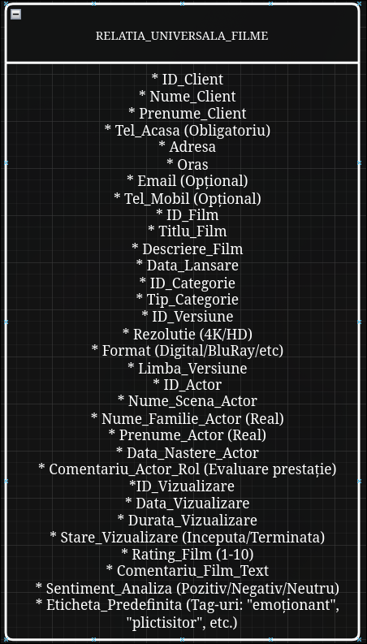
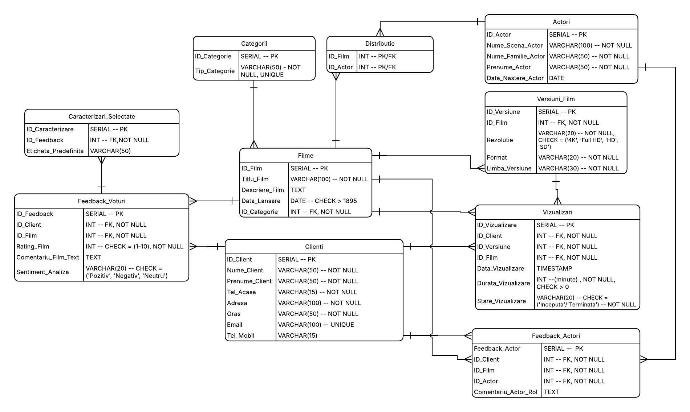
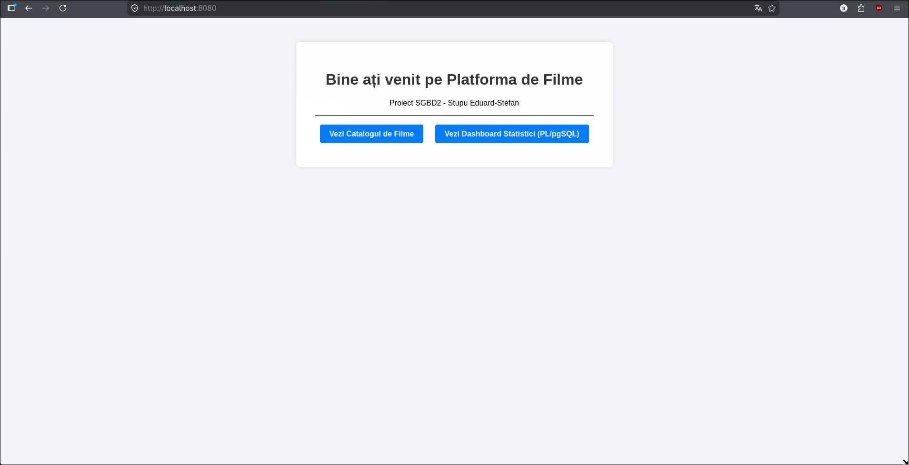
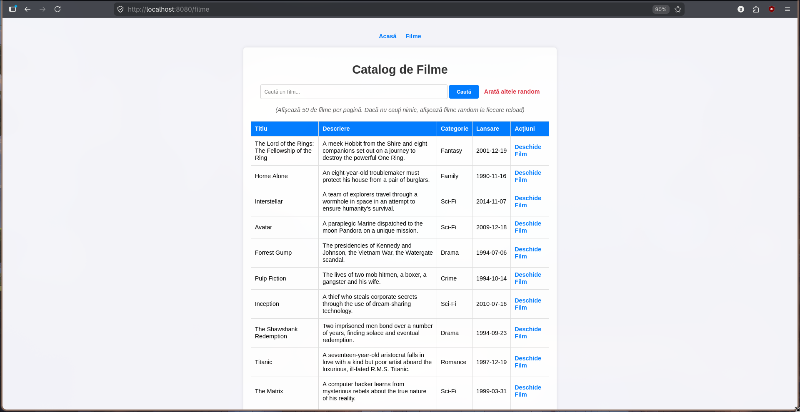
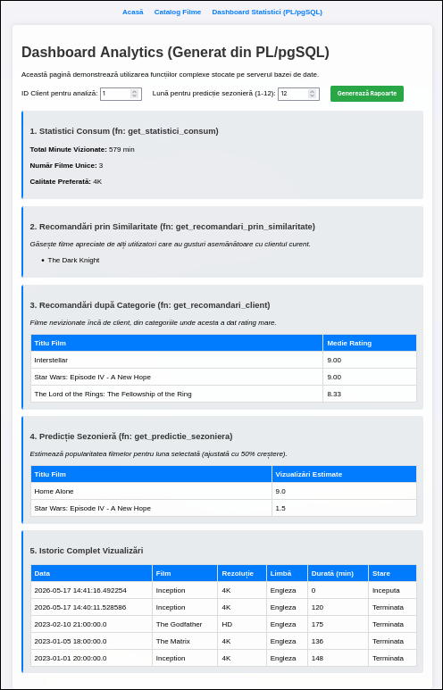
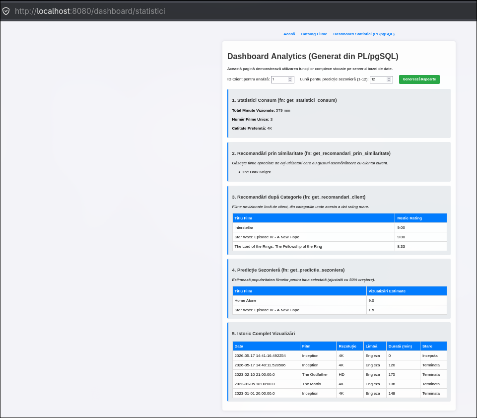

Curs: Sisteme de gestiune a bazelor de date
Student: Stupu Eduard-Stefan
Proiectul vizează realizarea unei platforme informatice pentru gestionarea unui catalog de filme, a interacțiunilor utilizatorilor cu acestea și a procesului de recomandare inteligentă. Sistemul este construit pentru a servi atât administratorilor platformei, cât și utilizatorilor finali (clienți).
Pentru a asigura o proiectare riguroasă a bazei de date, au fost identificate următoarele reguli ce guvernează funcționarea platformei:
Gestiunea Catalogului și a Versiunilor: Un film este caracterizat prin titlu, descriere, categorie și data lansării. Unicitatea conținutului este nuanțată prin existența mai multor versiuni disponibile pentru vizualizare (formate diferite, rezoluții 4K/HD sau variante lingvistice/subtitrări distincte). Rating-ul general al unui film nu este stocat static, ci este calculat dinamic pe baza voturilor agregate de la clienți.
Managementul Actorilor și a Prestației Artistice: Pentru fiecare actor se rețin datele de identificare (nume de scenă, nume real, prenume) și data nașterii. Sistemul permite o evaluare granulară a muncii acestora prin înregistrarea comentariilor specifice referitoare la rolul interpretat într-un anumit film, oferind o imagine de ansamblu asupra aprecierii prestației artistice a fiecărui actor.
Profilul Detaliat al Clientului: Identificarea clienților în sistem necesită obligatoriu numele, prenumele, un număr de telefon fix (de acasă), adresa completă și orașul. Opțional, se pot colecta adresa de e-mail și numărul de telefon mobil. Această structură permite o evidență clară a utilizatorilor și a distribuției lor geografice.
Monitorizarea Consumului (Istoric Vizualizări): Sistemul urmărește fiecare interacțiune a clientului cu un film, înregistrând data vizualizării, versiunea tehnică selectată, durata vizionării și starea acesteia (completă/întreruptă). Un client poate accesa mai multe filme, iar un film poate fi urmărit de același client de mai multe ori, la intervale diferite, generând un istoric complet al activității.
Sistemul Hibrid de Feedback și Vot: Clienții pot evalua filmele și actorii prin trei modalități simultane:
Analiza Emoțională și de Sentiment (Keywords): La nivelul serverului de baze de date (PL/pgSQL), comentariile și etichetele bifate sunt procesate prin identificarea unor cuvinte-cheie relevante. Rezultatul este clasificarea automată a sentimentului utilizatorului (Pozitiv, Negativ sau Neutru), analiză ce poate fi aplicată la nivel de film, categorie, actor sau profil de utilizator.
Calculul Similarității și Recomandări Personalizate: Utilizatorii sunt grupați automat pe baza similarităților dintre preferințele lor. Această similaritate este calculată analizând categoriile vizualizate frecvent, frecvența vizualizărilor, scorurile acordate, emoțiile identificate în feedback și aprecierile față de anumiți actori. Rezultatul permite generarea de recomandări de filme între utilizatori cu profiluri cinematografice similare.
Predicții și Estimări Sezoniere: Aplicația realizează previziuni privind succesul anumitor filme în perioade specifice ale anului (sărbători, vacanțe, intervale sezoniere). Aceste estimări se bazează pe analiza datelor istorice de vizualizare, pe popularitatea categoriilor și pe reacțiile anterioare ale clienților în contexte temporale similare.
Logica Centralizată (Server-Side Statistics): Toate calculele statistice, clasificările de sentiment și algoritmii de recomandare sau predicție sunt implementați exclusiv la nivelul bazei de date sub formă de proceduri stocate și funcții complexe, aplicația client având rolul de a prelua și afișa rezultatele finale.
Procesul de proiectare a bazei de date a urmat etapele de normalizare pentru a elimina redundanța și a preveni anomaliile de actualizare.
Conform metodologiei de proiectare, pornim de la o singură relație care conține toate atributele brute. Această stare este una nenormalizată, prezentând riscuri majore de redundanță și anomalii la inserare, ștergere și modificare.

Analizând regulile de business din secțiunea 1.2, stabilim următoarele dependențe:
DF1: ID_Client -> Nume_C, Prenume_C, Tel_Acasa, Adresa, Oras, Email, Tel_Mobil
Explicație: Datele de identificare și contact depind de ID-ul unic al clientului.
DF2: ID_Film -> Titlu, Descriere, Data_Lansare, ID_Categorie
Explicație: Metadatele filmului sunt determinate de ID-ul acestuia.
DF3: ID_Categorie -> Tip_Categorie
Explicație: Denumirea/Tipul genului depinde de ID-ul categoriei.
DF4: ID_Versiune -> ID_Film, Rezolutie, Format, Limba
Explicație: O versiune tehnică este o resursă specifică unui film, având format și rezoluție proprii.
DF5: ID_Actor -> Nume_Scena, Prenume_A, Nume_A, Data_Nastere_A
Explicație: Informațiile biografice ale actorului sunt determinate de ID-ul său.
DF6: ID_Client, ID_Film, Data_Vizualizare -> ID_Versiune, Durata, Stare_Vizualizare
Explicație: Determină varianta vizionată, cât a durat și dacă a fost finalizată.
DF7: ID_Client, ID_Film -> Rating, Comentariu_Text, Sentiment
Explicație: Un client acordă un single set de feedback (notă, text, sentiment) pentru un anumit film.
DF8: ID_Client, ID_Film, ID_Actor -> Comentariu_Actor_Rol
Explicație: Comentariul asupra prestației artistice depinde de combinația dintre filmul vizionat și actorul evaluat.
Distributie (ID_Film, ID_Actor)
Explicație: Am creat acest tabel pentru a gestiona relația de tip Many-to-Many dintre filme și actori.
Feedback_Actori (ID_Client, ID_Film, ID_Actor, Comentariu_Actor_Rol)
Explicație: Acest tabel izolează opiniile subiective ale clienților despre prestația unui actor specific într-un anumit film.
Vizualizari (ID_Vizualizare, ID_Client, ID_Versiune,ID_Film, Data_Vizualizare, Durata_Vizualizare, Stare_Vizualizare)
Explicație: Am separat aceste date deoarece vizualizările sunt evenimente multiple și independente
care depind de tripletul (Client, Versiune, Timp), evitând astfel repetarea inutilă a datelor de profil ale clientului la fiecare vizionare.
Feedback_Voturi (ID_Feedback, ID_Client, ID_Film, Rating_Film, Comentariu_Film_Text, Sentiment_Analiza)
Explicație: Separarea feedback-ului de istoricul vizualizărilor permite clienților să lase o singură recenzie per film,
facilitând calculul mediei de rating și execuția algoritmilor de analiză de sentiment la nivel de server.
Caracterizari_Selectate (ID_Feedback, Eticheta_Predefinita)
Explicație: Un singur feedback poate avea mai multe etichete asociate simultan (ex: "emoționant" și
"interesant"), am izolat această dependență multivaluată pentru a preveni redundanța masivă în tabelul principal de feedback.
În această etapă, am transpus regulile de normalizare într-un model vizual care reflectă arhitectura bazei de date și relațiile dintre entități.
3.1. Diagrama UML a Sistemului

Modelul este format din 10 entități, grupate logic pentru a asigura performanța și integritatea:
Conform cerințelor, am analizat modul în care instanțele entităților interacționează la nivel de date:
Pentru a garanta calitatea datelor, am implementat toate cele 5 tipuri de constrângeri:
În această secțiune este prezentat scriptul complet de definire a obiectelor bazei de date. Scriptul a fost conceput pentru a fi idempotent, permițând rularea repetată fără a genera conflicte de structură.
Primul pas al scriptului asigură eliminarea oricăror structuri reziduale. Utilizarea clauzei CASCADE este critică aici pentru a forța ștergerea tabelelor părinte chiar dacă acestea sunt referențiate de chei străine.
DROP TABLE IF EXISTS caracterizari_selectate CASCADE;
DROP TABLE IF EXISTS feedback_voturi CASCADE;
DROP TABLE IF EXISTS vizualizari CASCADE;
DROP TABLE IF EXISTS feedback_actori CASCADE;
DROP TABLE IF EXISTS distributie CASCADE;
DROP TABLE IF EXISTS versiuni_film CASCADE;
DROP TABLE IF EXISTS filme CASCADE;
DROP TABLE IF EXISTS actori CASCADE;
DROP TABLE IF EXISTS clienti CASCADE;
DROP TABLE IF EXISTS categorii CASCADE;
Am utilizat tipul de date SERIAL pentru toate cheile primare. Această alegere tehnică delega bazei de date sarcina de a crea și administra secvențele (SEQUENCE) necesare pentru generarea automată a ID-urilor.
Codul de creare a tabelelor:
-- Pasul 2: Creare tabele
-- 2.1 Creare tabele intependente
CREATE TABLE Categorii (
ID_Categorie SERIAL PRIMARY KEY,
Tip_Categorie VARCHAR(50) NOT NULL UNIQUE
);
CREATE TABLE Clienti (
ID_Client SERIAL PRIMARY KEY,
Nume_Client VARCHAR(50) NOT NULL,
Prenume_Client VARCHAR(50) NOT NULL,
Tel_Acasa VARCHAR(15) NOT NULL,
Adresa VARCHAR(100) NOT NULL,
Oras VARCHAR(50) NOT NULL,
Email VARCHAR(100) UNIQUE,
Tel_Mobil VARCHAR(20)
);
CREATE TABLE Actori (
ID_Actor SERIAL PRIMARY KEY,
Nume_Scena_Actor VARCHAR(100) NOT NULL,
Nume_Familie_Actor VARCHAR(50) NOT NULL,
Prenume_Actor VARCHAR(50) NOT NULL,
Data_Nastere_Actor DATE,
-- Constrângere pentru a evita duplicatele
CONSTRAINT unicitate_biografica_actor UNIQUE (Nume_Familie_Actor, Prenume_Actor, Data_Nastere_Actor)
);
-- 2.2 Creare tabele dependente
CREATE TABLE Filme (
ID_Film SERIAL PRIMARY KEY,
Titlu_Film VARCHAR(100) NOT NULL,
Descriere_Film TEXT,
Data_Lansare DATE NOT NULL,
ID_Categorie INT NOT NULL,
-- Legătura cu tabelul părinte
CONSTRAINT fk_categorie_film FOREIGN KEY (ID_Categorie)
REFERENCES Categorii(ID_Categorie)
-- Daca stergem o categorie, stergem toate filmele ce au aceeasi categorie pentru a nu avea erori
ON DELETE CASCADE,
-- Constrângere pentru a nu avea același film lansat în aceeași zi (evităm dublurile)
CONSTRAINT unicitate_film UNIQUE (Titlu_Film, Data_Lansare)
);
CREATE TABLE Versiuni_Film (
ID_Versiune SERIAL PRIMARY KEY,
ID_Film INT NOT NULL,
Rezolutie VARCHAR(20) NOT NULL,
Format VARCHAR(20) NOT NULL, -- Digital, BluRay, Streaming
Limba_Versiune VARCHAR(30) NOT NULL,
-- Legătura cu filmul părinte
CONSTRAINT fk_versiune_film FOREIGN KEY (ID_Film)
REFERENCES Filme(ID_Film) ON DELETE CASCADE,
-- Constrângere CHECK: acceptăm doar anumite standarde de calitate
CONSTRAINT check_rezolutie CHECK (Rezolutie IN ('4K', 'HD', 'SD', '3D'))
);
CREATE TABLE Distributie (
ID_Film INT NOT NULL,
ID_Actor INT NOT NULL,
-- Cheia primară este compusă din ambele ID-uri
PRIMARY KEY (ID_Film, ID_Actor),
CONSTRAINT fk_dist_film FOREIGN KEY (ID_Film) REFERENCES Filme(ID_Film) ON DELETE CASCADE,
CONSTRAINT fk_dist_actor FOREIGN KEY (ID_Actor) REFERENCES Actori(ID_Actor) ON DELETE CASCADE
);
CREATE TABLE Feedback_Actori (
Feedback_Actor SERIAL PRIMARY KEY,
ID_Client INT NOT NULL,
ID_Film INT NOT NULL,
ID_Actor INT NOT NULL,
Comentariu_Actor_Rol TEXT,
CONSTRAINT fk_fa_client FOREIGN KEY (ID_Client) REFERENCES Clienti(ID_Client),
CONSTRAINT fk_fa_film FOREIGN KEY (ID_Film) REFERENCES Filme(ID_Film),
CONSTRAINT fk_fa_actor FOREIGN KEY (ID_Actor) REFERENCES Actori(ID_Actor)
);
CREATE TABLE Vizualizari (
ID_Vizualizare SERIAL PRIMARY KEY,
ID_Client INT NOT NULL,
ID_Versiune INT NOT NULL,
ID_Film INT NOT NULL,
Data_Vizualizare TIMESTAMP NOT NULL DEFAULT CURRENT_TIMESTAMP,
Durata_Vizualizare INT NOT NULL, -- exprimată în minute
Stare_Vizualizare VARCHAR(20) NOT NULL,
-- Legaturi
CONSTRAINT fk_viz_client FOREIGN KEY (ID_Client) REFERENCES Clienti(ID_Client),
CONSTRAINT fk_viz_versiune FOREIGN KEY (ID_Versiune) REFERENCES Versiuni_Film(ID_Versiune),
CONSTRAINT fk_viz_film FOREIGN KEY (ID_Film) REFERENCES Filme(ID_Film),
-- Constrângere CHECK pentru starea vizionării
CONSTRAINT check_stare_viz CHECK (Stare_Vizualizare IN ('Inceputa', 'Terminata', 'Intrerupta')),
-- Constrângere pentru durată (nu poate fi negativă)
CONSTRAINT check_durata CHECK (Durata_Vizualizare >= 0)
);
CREATE TABLE Feedback_Voturi (
ID_Feedback SERIAL PRIMARY KEY,
ID_Client INT NOT NULL,
ID_Film INT NOT NULL,
Rating_Film INT NOT NULL,
Comentariu_Film_Text TEXT,
Sentiment_Analiza VARCHAR(20),
CONSTRAINT fk_feed_client FOREIGN KEY (ID_Client) REFERENCES Clienti(ID_Client),
CONSTRAINT fk_feed_film FOREIGN KEY (ID_Film) REFERENCES Filme(ID_Film),
-- Constrângere CHECK pentru nota acordată (1-10)
CONSTRAINT check_rating CHECK (Rating_Film BETWEEN 1 AND 10),
-- Regula: Un client poate lăsa o singură recenzie pentru un anumit film
CONSTRAINT unique_feedback_client UNIQUE (ID_Client, ID_Film)
);
CREATE TABLE Caracterizari_Selectate (
ID_Caracterizare SERIAL PRIMARY KEY,
ID_Feedback INT NOT NULL,
Eticheta_Predefinita VARCHAR(50) NOT NULL,
CONSTRAINT fk_char_feedback FOREIGN KEY (ID_Feedback)
REFERENCES Feedback_Voturi(ID_Feedback) ON DELETE CASCADE
);
În procesul de implementare, am aplicat următoarele decizii tehnice:
Sistemul prinde și afișează automat în GUI excepțiile ridicate de baza de date. Exemple:
fn_analiza_sentiment() aruncă o excepție (prinsă în Java și afișată ca mesaj roșu pe ecran) dacă recenzia are sub 3 caractere.fn_validare_vizualizare() previne date false oprind înregistrarea unei durate mai mari de 500 de minute printr-o excepție personalizată.Această secțiune detaliază interfața grafică a platformei (realizată cu Java Spring Boot și Thymeleaf, fără ORM) și modul în care aceasta interacționează cu algoritmii avansați implementați exclusiv la nivelul serverului de baze de date (PL/pgSQL).
Aplicația expune utilizatorului un catalog de filme cu funcție de căutare. Navigarea este rapidă, datele fiind aduse prin interogări directe (JdbcTemplate).


Accesând un film, utilizatorul poate selecta o versiune (4K, HD) și poate iniția o sesiune de vizionare. Interfața permite adăugarea de recenzii atât pentru film, cât și pentru actorii din distribuție.

Zona de "Dashboard" este punctul central unde se vizualizează rezultatele calculelor efectuate de serverul PostgreSQL. Niciun algoritm de predicție sau de agregare nu este scris în Java; aplicația client doar preia rezultatele.

Pentru a valorifica puterea serverului de baze de date și a evita transferul masiv de date prin rețea către client, am implementat următorii algoritmi direct în PostgreSQL, respectând astfel cerințele de performanță și logică pe server:
A. Sistemul de Recomandări prin Similaritate Acest algoritm identifică "sufletele pereche" cinematografice ale unui utilizator (persoane care au acordat note maxime la aceleași filme) și îi recomandă titluri noi pe baza acestui tipar.
CREATE OR REPLACE FUNCTION get_recomandari_prin_similaritate(p_id_client INT)
RETURNS TABLE (Titlu_Recomandat VARCHAR) AS $$
BEGIN
RETURN QUERY
SELECT DISTINCT f.Titlu_Film
FROM Filme f
JOIN Feedback_Voturi fv ON f.ID_Film = fv.ID_Film
WHERE fv.ID_Client IN (
-- Găsim utilizatorii care au dat nota 9 sau 10 la aceleași filme ca și clientul curent
SELECT fv2.ID_Client
FROM Feedback_Voturi fv2
WHERE fv2.ID_Film IN (
SELECT fv3.ID_Film
FROM Feedback_Voturi fv3
WHERE fv3.ID_Client = p_id_client AND fv3.Rating_Film >= 9
)
AND fv2.ID_Client <> p_id_client
AND fv2.Rating_Film >= 9
)
-- Excludem filmele pe care clientul curent le-a vizualizat deja
AND f.ID_Film NOT IN (SELECT v.ID_Film FROM Vizualizari v WHERE v.ID_Client = p_id_client)
LIMIT 3;
END;
$$ LANGUAGE plpgsql;
Explicație: Funcția execută o interogare corelată profundă direct pe server. Mai întâi, se extrage submulțimea de filme apreciate de utilizatorul de bază. Apoi, se identifică grupul de utilizatori (fv2.ID_Client) care au o intersecție favorabilă cu această submulțime. În final, sunt returnate filmele vizionate de acest grup, aplicând o operație de diferență (NOT IN) pentru a exclude filmele deja cunoscute de utilizatorul inițial. Astfel se obține o recomandare inteligentă bazată pur pe interacțiunile din SGBD.
B. Analiza de Sentiment Automată (Triggere și PL/pgSQL) În momentul în care un client postează un comentariu, baza de date procesează textul "on-the-fly", fără a solicita resurse de la nivelul aplicației Java.
CREATE OR REPLACE FUNCTION fn_analiza_sentiment()
RETURNS TRIGGER AS $$
DECLARE
keywords_pos TEXT[] := ARRAY['bun', 'excelent', 'recomand', 'interesant', 'super', 'fain', 'top'];
keywords_neg TEXT[] := ARRAY['slab', 'plictisitor', 'nasol', 'prost', 'timp', 'dezamagit'];
p_count INT := 0;
n_count INT := 0;
word TEXT;
BEGIN
-- Validare și generare excepție personalizată
IF NEW.Comentariu_Film_Text IS NOT NULL AND length(trim(NEW.Comentariu_Film_Text)) < 3 THEN
RAISE EXCEPTION 'Eroare SGBD: Comentariul este prea scurt pentru a fi analizat.';
END IF;
NEW.Sentiment_Analiza := 'Neutru';
IF NEW.Comentariu_Film_Text IS NOT NULL THEN
-- Parsarea textului, eliminarea punctuației și împărțirea în cuvinte
FOR word IN SELECT unnest(string_to_array(translate(lower(NEW.Comentariu_Film_Text), '.,!?;:', ''), ' ')) LOOP
IF word = ANY(keywords_pos) THEN p_count := p_count + 1;
ELSIF word = ANY(keywords_neg) THEN n_count := n_count + 1;
END IF;
END LOOP;
-- Decizia finală
IF p_count > n_count THEN NEW.Sentiment_Analiza := 'Pozitiv';
ELSIF n_count > p_count THEN NEW.Sentiment_Analiza := 'Negativ';
END IF;
END IF;
RETURN NEW;
END;
$$ LANGUAGE plpgsql;
CREATE TRIGGER trg_sentiment
BEFORE INSERT OR UPDATE ON Feedback_Voturi
FOR EACH ROW EXECUTE FUNCTION fn_analiza_sentiment();
Explicație: Acest cod utilizează capabilitățile native de parsare de string-uri din PostgreSQL (string_to_array, translate). Se transformă comentariul într-un rând de elemente (prin unnest), care sunt comparate eficient, în buclă, cu array-uri predefinite de cuvinte-cheie. Trigger-ul este setat pe BEFORE INSERT, permițând modificarea înregistrării (NEW.Sentiment_Analiza) chiar înainte ca aceasta să fie efectiv scrisă pe disc. De asemenea, funcția ridică o excepție (prinsă ulterior de interfața Java) dacă datele sunt invalide.
C. Predicții Sezoniere Acest algoritm realizează o estimare predictivă privind succesul filmelor într-o anumită lună a anului, folosind datele agregate din trecut.
CREATE OR REPLACE FUNCTION get_predictie_sezoniera(p_luna INT)
RETURNS TABLE (Titlu_Film VARCHAR, Vizualizari_Estimate DECIMAL) AS $$
BEGIN
RETURN QUERY
SELECT f.Titlu_Film, COUNT(v.ID_Vizualizare) * 1.5
FROM Filme f
JOIN Vizualizari v ON f.ID_Film = v.ID_Film
WHERE EXTRACT(MONTH FROM v.Data_Vizualizare) = p_luna
GROUP BY f.Titlu_Film
ORDER BY 2 DESC
LIMIT 5;
END;
$$ LANGUAGE plpgsql;
Explicație: Algoritmul folosește funcția EXTRACT pentru a filtra istoricul imens de vizualizări exclusiv pe baza lunii calendaristice solicitate, ignorând anul. Realizează o agregare complexă (COUNT, GROUP BY) pentru a număra vizualizările per film și aplică o regulă de business matematică (un spor anticipat de 50% pentru previziuni, reprezentat prin înmulțirea cu 1.5). Rezultatul este sortat descrescător și limitat la top 5 cele mai susceptibile succese de casă pentru luna respectivă, degrevând complet clientul de această sarcină.